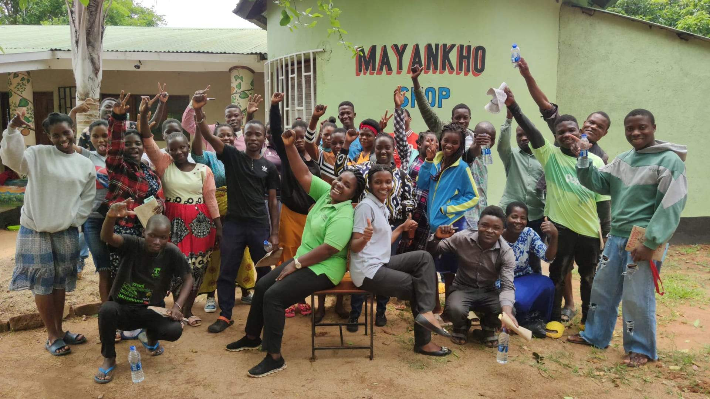

Grants programme project
Mayankho
Entrepreneurship, skills and lending support designed with rural communities in Southern Malawi.
Project overview
Enterprise shaped for rural communities
Mayankho works with rural communities in Southern Malawi, with a focus on women and young people developing skills, enterprises and routes to greater economic resilience.
The foundation began a four-year support programme in 2024, contributing to core operations and to the systems needed for lending, loan recovery and small-business development.
The work also focuses on programme outcomes and longer-term sustainability through a more diversified funding base.
Who the project serves
Women and young people building livelihoods
The project works with people in rural communities whose business ideas can be constrained by limited access to skills, lending and operational support.
Training and finance are brought together so that enterprise development is supported by practical knowledge as well as capital.
Partnership in practice
What the partnership enables
Core operations
Foundation support contributes to the organisational capacity needed to deliver the work.
Skills & entrepreneurship
Training supports women and young people as they develop and manage small businesses.
Lending & recovery
The programme strengthens lending and loan-recovery mechanisms for longer-term use of funds.
Sustainability
Work on outcomes and a diversified funding base supports Mayankho's longer-term resilience.
Partner organisation
Work led close to the community
Learn more about Mayankho and its wider work.
Visit Mayankho websitePhoto gallery
Mayankho, in the Lukhubula area of southern Malawi
01 / 05
Get involved
Support community-led opportunity
Support can help rural entrepreneurs develop skills, access appropriate finance and strengthen livelihoods. Contact the foundation to discuss collaboration.